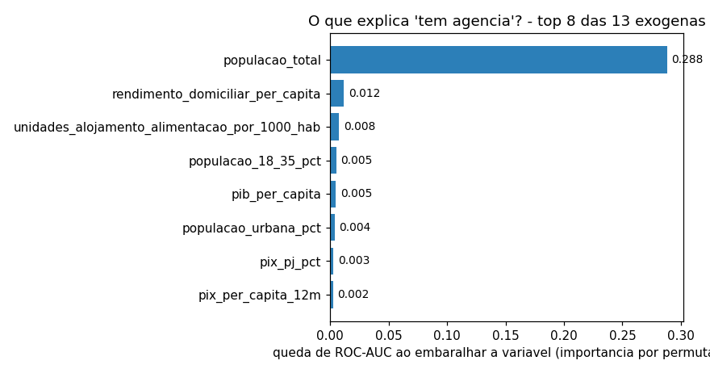
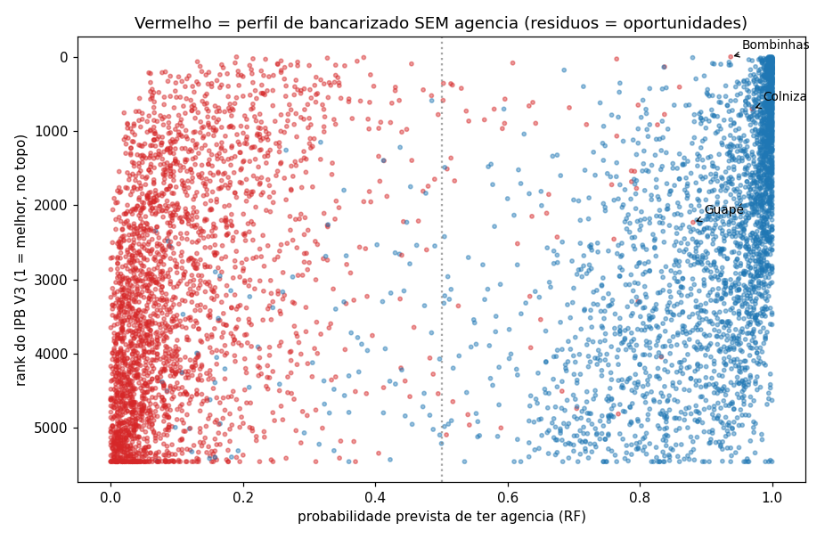

Cada etapa vira tabela no BigQuery (dataset ipb_staging). Dá pra
auditar tudo.
Preparação: o que a gente aprendeu
1
O que existia no começo
Censo, PIB, Pix, Estban, Anatel e IDHM. Pix de poucos meses, sem correspondentes
e sem CEMPRE no índice.
2
O erro que a gente achou
A primeira fórmula zerou 119 cidades pequenas cheias de lotérica. Era a fórmula
que estava errada, não as cidades. Trocamos para gap linear e as versões
convergiram.
3
O que a gente tratou
Zero assumido nas 2.656 cidades sem agência. Min-max com winsorize, taxas por
100 mil hab, estratos, log1p, correspondentes agregados por tipo.
A gente quebrou a fórmula antes de confiar nela.
O que os dados contam I · escolaridade
Na cidade média do país, só 4 em cada 10 adultos concluíram o
ensino médio.
Ponderando pela população, a média sobe para 52%. As grandes
cidades são mais escolarizadas, e elas puxam a conta pra cima.
O que os dados contam II · dinheiro em movimento
O agro do Centro-Oeste e o comércio de fronteira do Norte movem
mais Pix por habitante que as metrópoles do Sudeste. Dinheiro que circula fora do
radar do PIB.
A solução: 5 pilares e uma média geométrica
ACapacidade de consumoPIB per capita, rendimento, empregos formaisCEMPRE 2024 entra aquipeso 15%
BDinamismo financeiroPix per capita nos últimos 12 mesesR$ 13,8 trilhões movimentadospeso 20%
CAdoção digitalBanda larga fixa por 100 habitanteso proxy do acesso digitalpeso 15%
DGap bancárioAgências e correspondentes por tipo, invertidoas 2.656 cidades sem agência moram aquipeso 30%
EPerfil demográficoEscolaridade e população de 18 a 35 anos39,5% com ensino médio completopeso 20%
Pilar zerado zera o índice. Quem não tem nada em nenhuma dimensão não
entra no ranking à força.
Três versões do índice
V1 · Clássico
A fórmula original
Pesos iguais nos cinco pilares. Ranqueou riqueza e chamou de potencial.
V2 · Recalibrado
O ajuste rápido
Dobrou o peso do gap bancário pra tirar o viês da renda.
V3 · Presença completa
A oficial
Mede a rede inteira, não só agência, e soma os empregos formais.
Spearman V1 × V3: 0,840. A V3 é a oficial porque a pergunta do projeto é de concorrência.
Além do índice: o que a gente experimentou com ML
O mapa
Leituras prontas: o potencial concentra no eixo sul-sudeste, no
litoral turístico e nos dormitórios industriais. Ao vivo dá pra dar zoom, trocar para
arquétipos e passar o mouse em qualquer cidade.
Além do índice: o que a gente experimentou com ML
Arquétipos: 6 tipos de cidade
Turismo - com rede (740): destinos grandes e ricos, já atendidos
Sem rede bancária - renda baixa (1.278): o interior pobre, 100% sem agência
Perfil intermediário - empresarial (1.248): PIB pc alto, Pix PJ de 42%
Perfil intermediário - tradicional (919): cidades médias de renda mediana
Turismo - sem banco (653): pequenas, ricas e 100% sem agência. O achado
Sem rede bancária - renda alta (732): muito pequenas, renda acima da média
Além do índice: o que a gente experimentou com ML
O que a gente tentou: prever presença bancária


0,94ROC-AUC no teste (n = 1.114)
0,95PR-AUC
0,87F1
A pergunta: dá pra prever presença bancária olhando só o contexto da cidade?
Dá. Presença é prevível, porque banco coloca agência onde tem gente.
O produto útil são os desvios: as 56 cidades com cara de bancarizada e zero
agência.
Foi experimentação honesta, com alvo proxy. Sem rótulo de
verdade, o modelo cruza com o IPB. Não o substitui.
Resultados
R$ 93 milPIB per capita do Top 30. A mediana nacional é R$ 30 mil.
0,57Participação PJ no Pix no Top 30. Nos 30 piores, 0,19.
32Cidades do Top 100 que trocam se o pilar D sair. Mesmo com Spearman de 0,894.
Pra quem vai usar: o topo do ranking junta as três coisas de uma
vez, dinheiro circulando, cidade digitalizada e pouco banco físico. É isso que separa
oportunidade de aparência.
Limitações e próximos passos
01
Anos de referência misturados entre as fontes: Censo 2022 até correspondentes
de 2026.
Declarado em cada entrega.
02
Concorrência digital quase impossível de pegar com dado público: só 2,2% dos
correspondentes são de banco digital.
O Pix segue medindo adoção instalada.
03
Não existe ground truth. O alvo é proxy, assumido e declarado.
Validações objetivas com CEMPRE e turismo.
04
Faltou coletar: Anatel móvel 4G/5G, CNPJ/Caged, visitação e dados de
crédito.
Tudo na fila de enriquecimento.
4G/5G no pilar CCNPJ e Caged cobrem o MEIVisitação (Embratur) fecha o turismoValidar o Top 100 com negócio